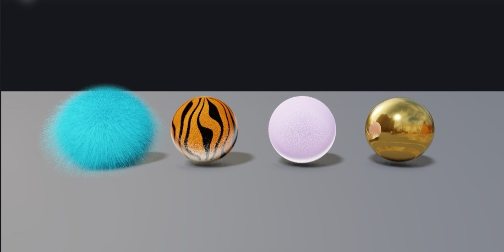
game engine · In development
Plush
A flexible game engine
C# gameplay, a datablock-based model, integrated python authoring, and a space I can learn in while pushing boundaries.
Luke Stilson · Technical artist
I’ve spent most of my career making tools that help other people make things. Most projects here are personal work: my own tools, games, and experiments.
For my professional roles, see Studio Work →
game engine · In development
A flexible game engine
C# gameplay, a datablock-based model, integrated python authoring, and a space I can learn in while pushing boundaries.
Tests, prototypes, and notes from whatever I’m working on. What I tried, what worked, and what I’m still figuring out.
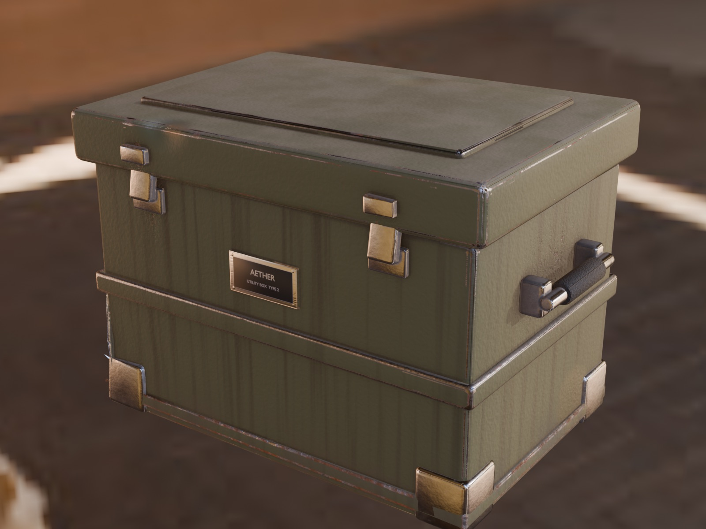
From the dev log
Aether has grown from a meeting point for older tools into the geometry-first material system at the center of my Blender workflow.
Read the entry →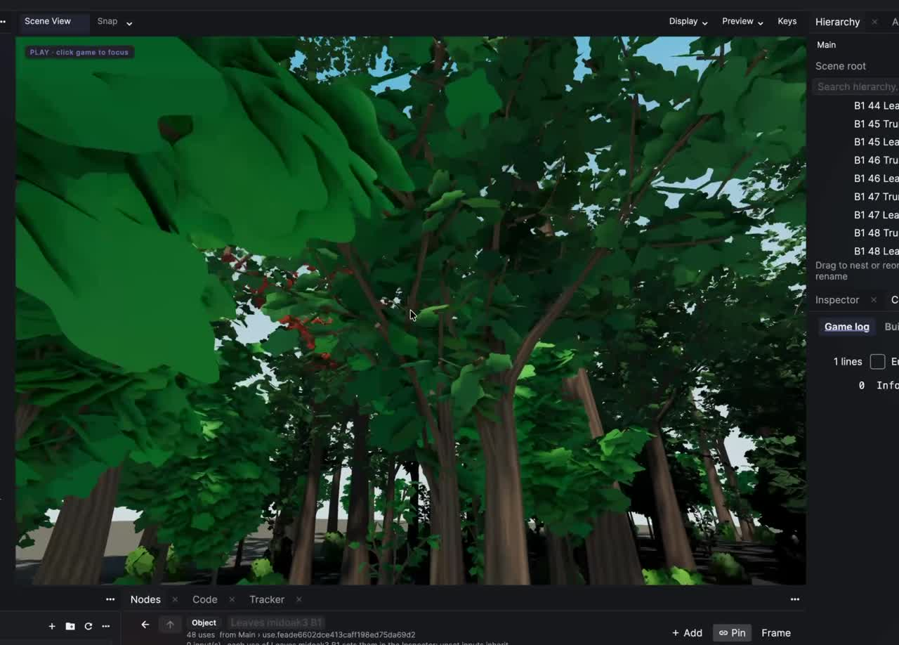
From the dev log
Tree Studio in Blender, then the foliage in Plush. Two recordings from the experiments.
Read the entry →Free & open source · Blender + Unity
A Blender encoder and Unity playback system for bringing vertex animation into real-time projects.
Blender Extensions · November 5, 2026 snapshot.
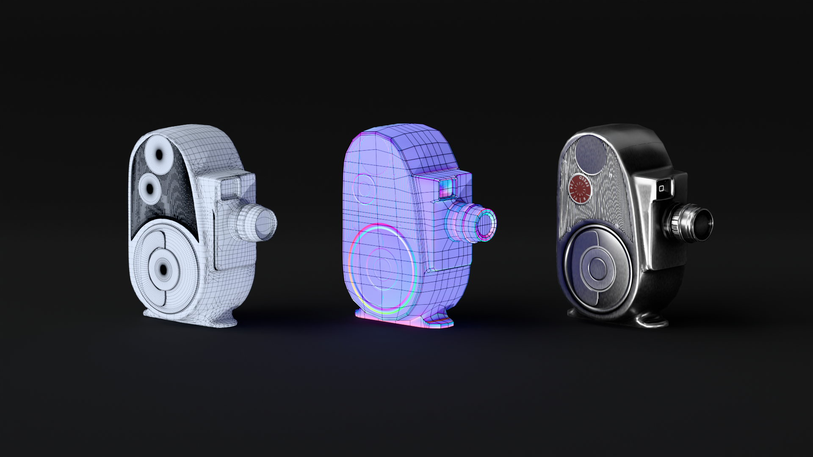
Active development
Geometry-first material authoring for seamless surfaces, trim sheets, decals, and props.
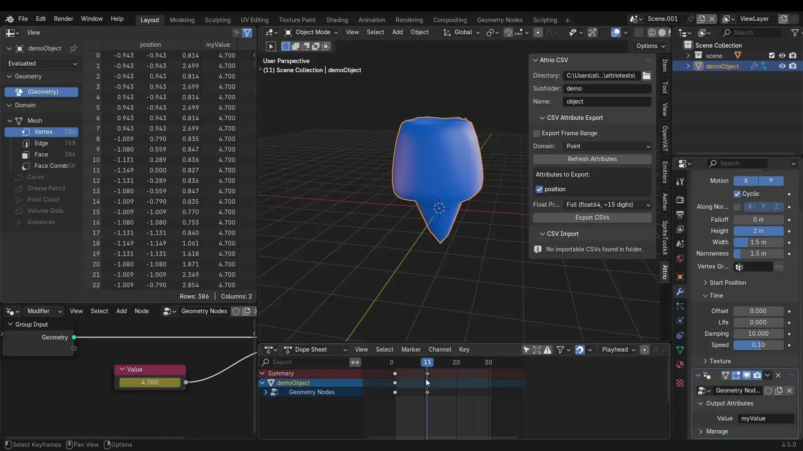
Released Blender extension
Geometry and attributes ↔ CSV.
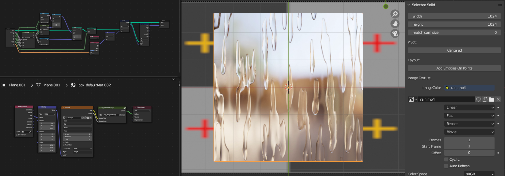
In development
Images, layers, and pixel-aligned scenes in Blender.
![No Rig Required - Vertex Animation for Gameplay [OpenVAT] video thumbnail](https://i.ytimg.com/vi/NGniucSk4hU/hqdefault.jpg) Watch on YouTube ↗
Watch on YouTube ↗OpenVAT / Unity
Vertex animation for gameplay, using OpenVAT. The Unity side of the workflow gets its own attention here: taking baked motion into an engine and making it useful in a game.
 Watch on YouTube ↗
Watch on YouTube ↗Geometry Nodes
The system behind the nodes. A longer explanation to go alongside the short Geometry Nodes clips on Instagram.
 Watch on YouTube ↗
Watch on YouTube ↗Datablocks & users
A look underneath Blender’s interface: datablocks, users, and how the pieces of a scene relate to each other. A useful starting point for understanding what a script is changing, and why one edit can show up somewhere else.
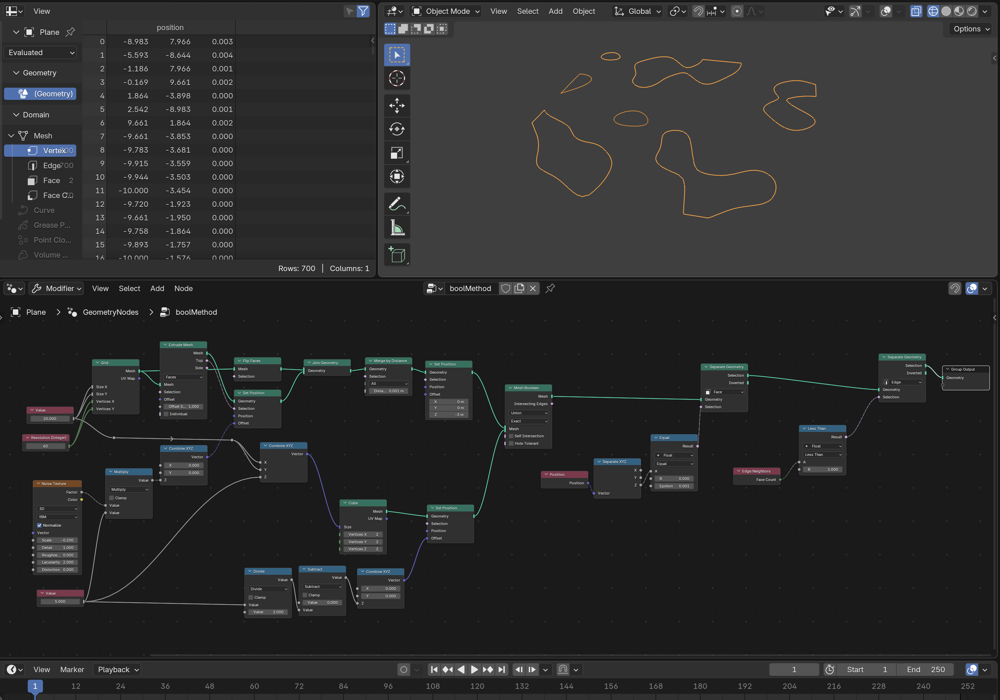
Simple graph reference for creating smooth noise-based mesh islands via geometry nodes.
Read the entry →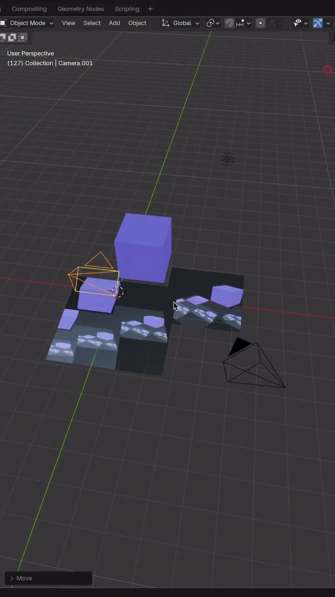
Blender realtime camera texture in Eevee — a custom build.
Read the entry →Personal projects
Three personal projects, each built around a different question: what can I add, how do I keep it focused, and what does a much bigger game actually take?
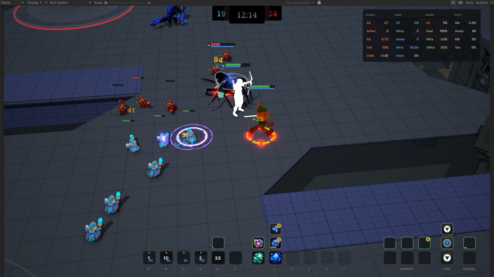
Unity · Personal project
A deliberately oversized MOBA-inspired project about reusable systems, character abilities, bot AI, and what it takes to make them work together.
Explore the project →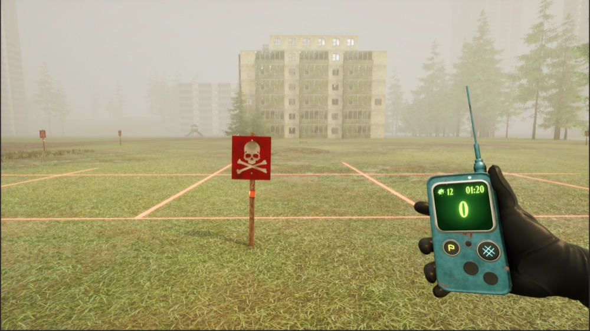
Unreal Engine · Prototype
A focused first-person Minesweeper prototype and an exploration of puzzle generation, solvability, and the move from UE4 to UE5.
Explore the project →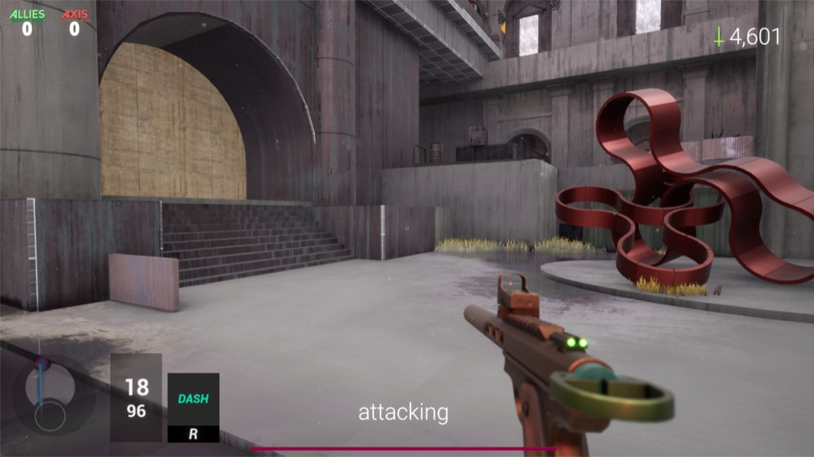
Unreal Engine · Experimental release
An early UE4 Blueprint project where I kept adding things: weapons, abilities, grappling, and ways to move through a first-person game.
Explore the project →I've spent most of my career making tools that help other people make things.
I like figuring out how things work, why they work the way they do, and whether there's a better way to do them.
Tutorials and experiments on YouTube ↗If one of my tools has been useful to you, you can support the work on GitHub.